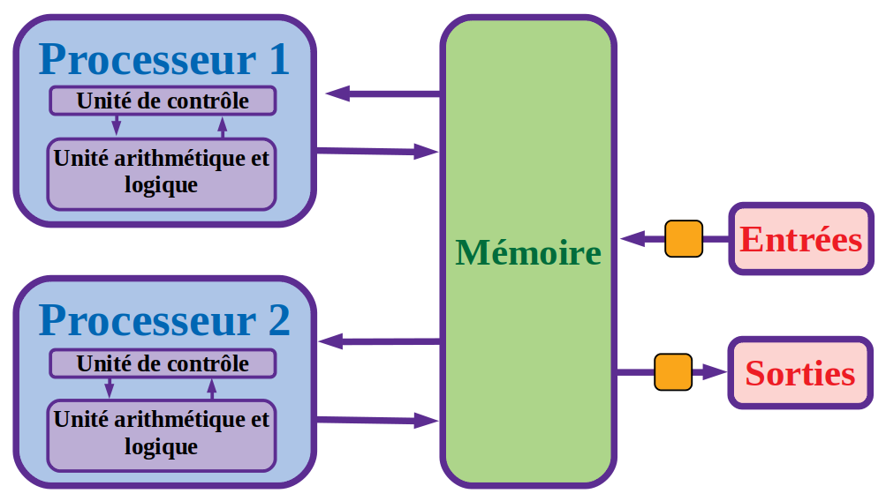

Exercice 2.2 : L'architecture de Von neuman aujourd'hui
Plus de soixante ans après son invention, le modèle d’architecture de von Neumann régit toujours l’architecture des ordinateurs. Par rapport au schéma initial, on peut noter deux évolutions.

Les entrées-sorties, initialement commandées par l’unité arithmétique et logique, sont depuis le début des années 1960 sous le contrôle de processeurs autonomes (canaux d’entrée-sortie et mécanismes assimilés). Associée à la multiprogrammation (partage de la mémoire entre plusieurs programmes).
Cette organisation a notamment permis le développement des systèmes en temps partagé.
Les ordinateurs comportent maintenant des processeurs multiples qui fonctionnent en parallèle. Cette organisation permet d’atteindre une puissance globale de calcul élevée sans augmenter la vitesse des processeurs individuels, limitée par les capacités d’évacuation de la chaleur dans des circuits de plus en plus denses.
Compléter votre cours (Exercice 2.2 de la feuille 2).
Point 2 :
Lever la main pour que le professeur vérifie que tous les exercices ont été faits (liste complètement verte à gauche) et que la feuille du cours a été complétée correctement.